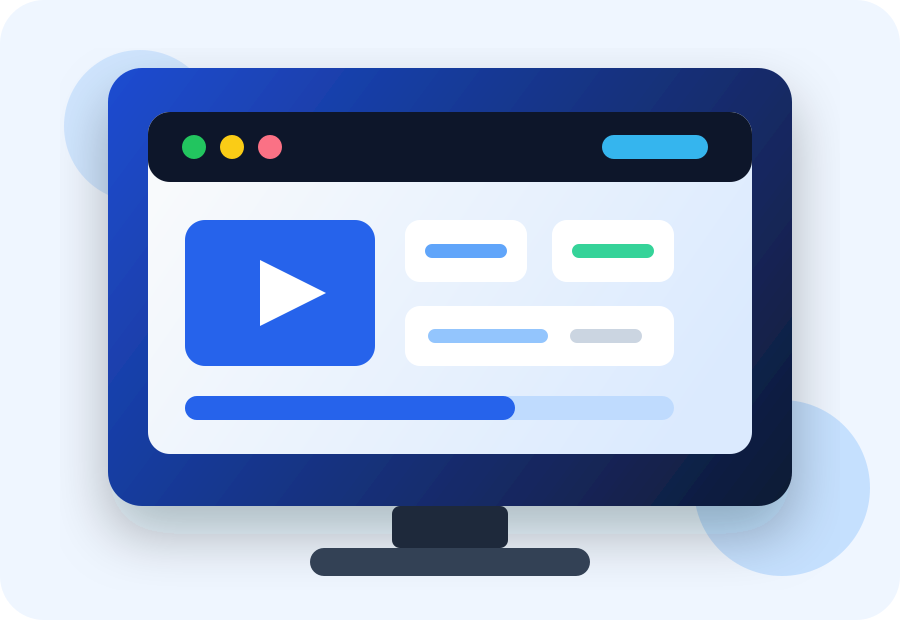

Legale Inhalte
Achten Sie darauf, dass der Anbieter mit lizenzierten Inhalten arbeitet und keine unrealistischen Versprechen macht.
IPTV Anbieter Deutschland 2026
Suchen Sie einen zuverlässigen IPTV Anbieter? Dieser Ratgeber zeigt, woran Sie seriöse Angebote erkennen, welche Qualitätsmerkmale wichtig sind und wie Sie ein IPTV Abo bewusst vergleichen.

Nicht jeder IPTV Anbieter ist gleich. Für langfristige Zufriedenheit zählen vor allem Stabilität, legale Inhalte, transparente Preise und ein erreichbarer Kundensupport.
Achten Sie darauf, dass der Anbieter mit lizenzierten Inhalten arbeitet und keine unrealistischen Versprechen macht.
Ein guter IPTV Anbieter nutzt zuverlässige Server, damit Streams ohne ständige Unterbrechungen laufen.
IPTV sollte auf Smart TV, Android TV, Fire TV Stick, Smartphone, Tablet und Browser funktionieren.
Schneller Support hilft bei Einrichtung, Login-Problemen, App-Fragen und technischen Schwierigkeiten.
Einfach einrichten
Ein guter Anbieter erklärt verständlich, welche Apps unterstützt werden und welche Internetgeschwindigkeit für HD oder 4K sinnvoll ist.
Nutzen Sie diese Übersicht als Checkliste, bevor Sie ein IPTV Abo kaufen oder einen Test starten.
| Kriterium | Warum es wichtig ist |
|---|---|
| Rechtliche Transparenz | Seriöse Anbieter erklären klar, welche Inhalte verfügbar sind und wie die Nutzung geregelt ist. |
| Bildqualität | HD und 4K sind nur sinnvoll, wenn Internetleitung und Serverqualität stabil sind. |
| Preisstruktur | Klare Monats- oder Jahrespreise schaffen Vertrauen und vermeiden versteckte Kosten. |
| Einrichtung | Eine einfache Installation ist besonders wichtig für Smart TV und Fire TV Stick Nutzer. |
| Kundenservice | Guter Support entscheidet oft, ob ein IPTV Abo langfristig angenehm bleibt. |
Sicher entscheiden
Bevor Sie ein IPTV Abo kaufen, sollten Sie prüfen, ob der Anbieter seriös wirkt. Eine professionelle Website, verständliche Informationen, sichere Zahlungsmöglichkeiten und realistische Leistungsbeschreibungen sind wichtige Signale.
Überlegen Sie, auf welchen Geräten Sie schauen und welche Bildqualität Sie wirklich benötigen.
Vergleichen Sie Legalität, Preise, Laufzeiten, App-Kompatibilität und Support-Angebote.
Nutzen Sie nach Möglichkeit einen seriösen Test, um Stabilität und Bedienung im Alltag zu prüfen.
IPTV bedeutet Internet Protocol Television. Fernsehinhalte werden dabei über das Internet übertragen.
Der beste IPTV Anbieter hängt von Ihren Bedürfnissen ab: Geräte, Support, Stabilität, Preis und rechtliche Transparenz sind entscheidend.
Ja, viele legale IPTV Dienste funktionieren auf Smart TVs, Android TV, Fire TV Stick, Smartphones und Tablets.
Ein kurzer Test kann helfen, Qualität, Bedienung und Kompatibilität zu prüfen. Achten Sie trotzdem auf seriöse Bedingungen.
Vergleichen Sie Angebote nach Stabilität, Legalität, Preis, Support und Gerätekompatibilität.